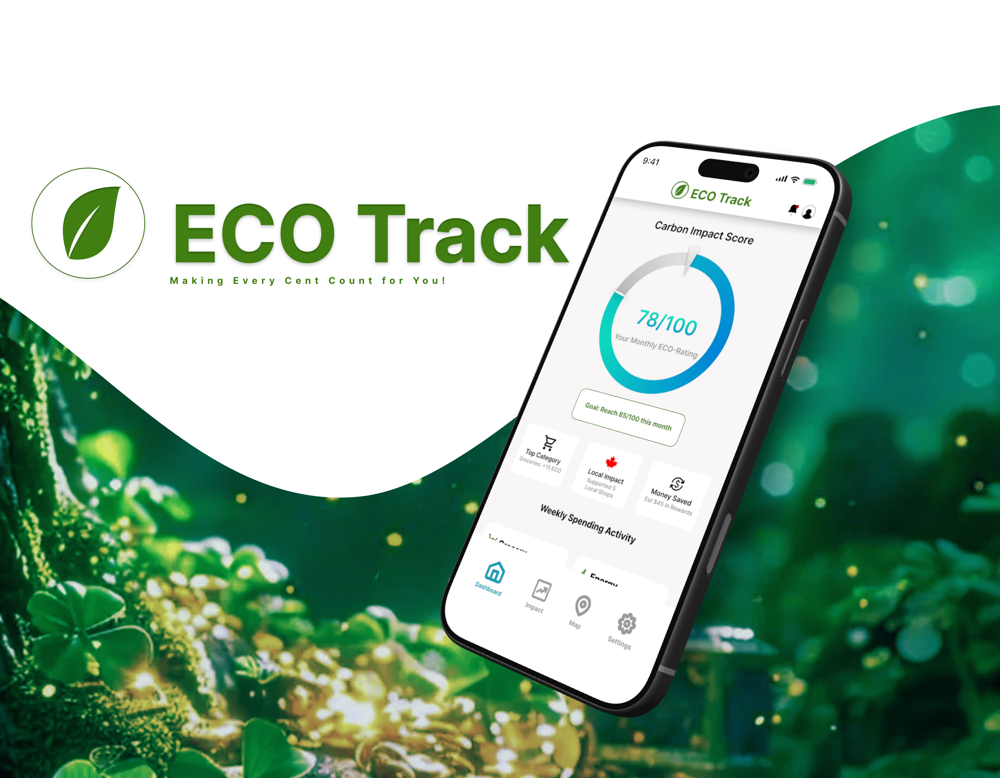

Product designer · Open to work
I make complicated things easier to use.
Not just cleaner, actually easier. I'm Noibedya, and I start with research, prototype fast, and change my mind when the evidence says I should.

Selected work
Case studies
Three projects, written the way they actually happened: what I tried, what didn't work, and what I'd do differently.

Legal-medical referral · 2-week internship · Mobile + desktop
HelpAfterAccident.com
In two weeks at GoMAXPAIN, I designed signup and intake for five different kinds of users (doctors, lawyers, patients, marketers, and influencers) on one platform. The tricky part was patient intake: I ended up building four versions before one felt right for someone filling it out after a car accident.
Read the case study →
B2B SaaS · 4-week concept · Desktop web
Creative Asset & Video Workflow
A concept B2B tool that pulls video production out of Slack threads and email: a Kanban production board, smart task cards, and a no-login review room where clients leave timestamped feedback straight from a link. Research came from interviews with editors and my own motion-graphics work.
Read the case study →
Healthcare · 4-week concept · iOS + tablet
AI Health Link Canada
A solo concept project for Canadian healthcare: AI symptom triage with an emergency gate, a digital health vault, and care booking across virtual and walk-in providers. It's 17 screens across mobile and tablet, closed out with an honest self-audit against WCAG.
Read the case study →
Mobile app · Concept project · iOS
ECO Track
My first product design project: a carbon footprint tracker that helps users discover local eco-friendly stores and measure their environmental impact. Designed end-to-end from research to 17 screens, with an honest self-audit.
Read the case study →About
Hi, I'm Noibedya.
I'm a product designer. I work on making complicated things easier to use. Not just cleaner. Actually easier.
I start with research. I want to know what people are trying to do, where they get stuck, and why, before I open Figma. I prototype fast and change my mind a lot.
I've got a BSc in Computer Science, six years of freelance brand and motion design work behind me, and I'm currently a Product Design Intern at GoMAXPAIN, designing onboarding and profile systems for a legal and medical intake platform.
Outside work, I read about design history and cognitive psychology, and I'm always looking for better coffee.
Design
Tools
Ways of working
Contact
Let's talk.
I'm open to full-time roles and freelance projects. Email is the fastest way to reach me, and I actually read it.